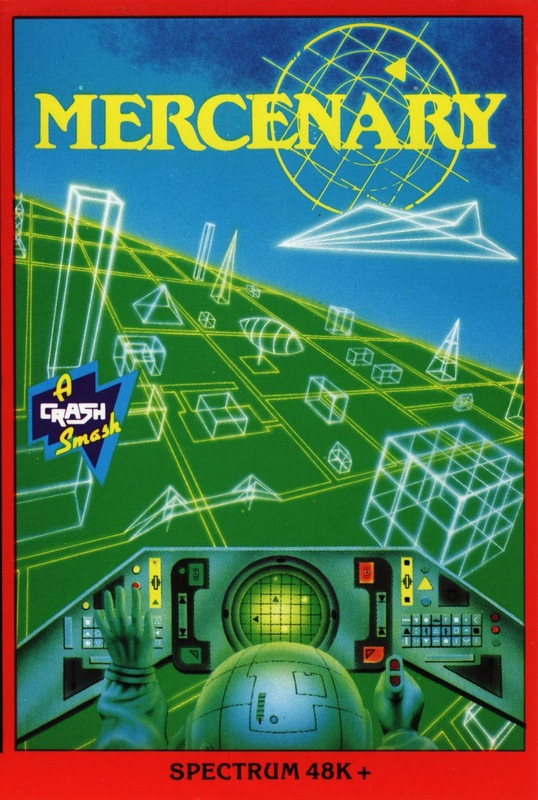
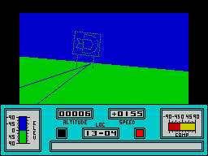
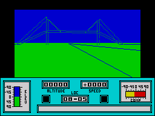

Mercenary


{kind=link}

| Publisher: | Novagen |
| Price: | £9.95 |
| Year: | 1987 |
| Source: | CRASH, Issue 44 |

Somewhere in the distant future a war-weary mercenary is returning to his home planet in his Prestinium Falcon spaceship. Suddenly his onboard computer, Benson, reports a damage alert. Further investigation reveals severe damage to the navigation CPU, and the consequent miscalculated course has a potentially deadly result: the Prestinium Falcon is heading directly toward the planet Targ.

The only course of action is to switch in reverse thrusters, and hope the craft slows enough for a crash landing.
As thrusters reach their maximum, the mercenary blacks out under the severe G force and later comes to in the remains of the impacted craft. Only Benson’s portable module is working, and the mercenary takes it before walking off into the sunset of an alien planet...
Most of Targ is a barren wasteland, but the surface is deceptive and hides a huge subterranean city — the only major centre of population in the complex of intersecting tunnel highways and caverns.
According to Benson, the original occupants of the planet were the Palyars, a peaceful, sensitive people who led a contented existence till the arrival of the Mechanoids, a race evolved from organic robots.
Though the warlike Mechanoids soon defeated the Palyars and became the dominant race, the Palyars have not been completely defeated. The Palyar War Council and the majority of their population live in a colony craft that hovers high above the city.
Since the Prestinium Falcon is damaged beyond repair, a new ship powerful enough to leave Targ must be found, a task which requires exploration of the entire first-person 3-D world of Targ and interaction with its inhabitants. There are three ways of achieving this objective, the most obvious being to act as a freelance fighter for either Mechanoids or Palyars and to reap the financial reward.

First, however, a means of transport is essential. Fortunately the Prestinium Falcon has crashed near an airfield, where a craft can be bought — or stolen, risking the retaliation of its owner. The manoeuvrable craft handles like a plane; it can fly backwards as well as forwards — very disconcerting! — and can also travel along the ground at a reduced speed. The mercenary’s location on the planet is given by coordinates. At location 9,6 is a hangar giving access to the underground city, which is explored on foot. Most of the doors to the interconnected rooms and corridors are oblongs, but a few are differently shaped — and locked. They can be unlocked with keys of the same shape.
Reaching the Palyar colony craft isn’t that easy, as most of the craft found on the surface are unable to climb to its high altitude. The ship that can reach it is carefully hidden, and the only alternative is to find some way of boosting your own ship’s power with the correct equipment.
Mercenary was conceived in 1984 when CRASH was young and rubber keys roamed the earth; it appeared on the Commodore later that year (ZZAP! 64 gave it 98%) and has since materialised format by format.
Now the CRASH reviewers think the Spectrum Mercenary is a masterpiece, and at 96% it’s just one point short of the highest CRASH rating ever.
CRITICISM
“At last! Live the legend as it bursts into Spectrum life. Mercenary is a concept and a half. An entire alien environment has been crammed into 48K, with a huge overground planet and subterranean city to explore. What is most impressive, though, is the way the game is structured. Taking an object to the Palyars can infuriate the Mechanoids to the point where they won’t negotiate with you, and vice versa. Consequently, correct diplomacy is essential to get the best out of both factions. The sheer depth and involvement on offer is second to none, and the satisfaction gained from progressing is paramount. Mercenary has a great past and now, thanks to David Aubrey-Jones, Spectrum owners have the opportunity to give it a great future.”
PAUL ... 97%
“I doubt very much if I’ll be able to finish such a complex game as Mercenary for a few months — but what I have seen of it so far has kept me enthralled. Mercenary is relatively unusual for the Spectrum: it’s very deep, involving and creating a substantial amount of atmosphere that is guaranteed to keep you up into the early hours of the morning. The vector graphics work well and retain their scale from whichever angle and at whatever speed you view them. Even on finishing Mercenary you’ll be coming back for more — there are many solutions to the deceptively simple conclusion. Packed with hundreds of locations and functional objects, you haven’t seen innovation till you’ve seen Mercenary.”
RICKY ... 95%
“After two years it’s arrived! Was Mercenary worth the wait? Well, the game is immensely playable, and contains enough variety to appeal to fans of all genres. Exploring the city of Targ is an experience in the true sense of the word, and actually attempting to escape is a consistent challenge from start to finish — but it’ll be weeks before you’ve discovered all the game’s mysteries. The vector graphics are exceptional — very fast, extremely smooth and uncannily realistic. They more than adequately convey the feeling that this strange, 3-D world actually exists. Everything is there: all you have to do is explore ... In a word, the answer to my first question is a resounding ‘yes!’. Mercenary is a triumph of programming and aspires to new heights in Spectrum gaming.”
MIKE ... 97%
COMMENTS
| Joysticks: | Cursor, Kempston, Sinclair |
| Graphics: | Excellent, fast and smooth |
| Sound: | Atmospheric |
| General rating: | An excellent and innovative flight/exploration/action game |
| Presentation: | 94% |
| Graphics: | 90% |
| Playability: | 97% |
| Addictive qualities: | 97% |
| Overall: | 96% |